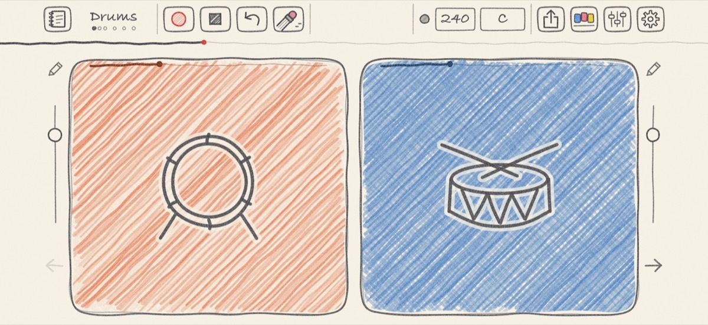
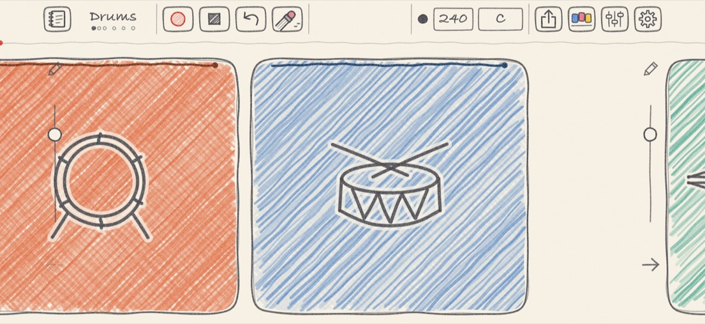
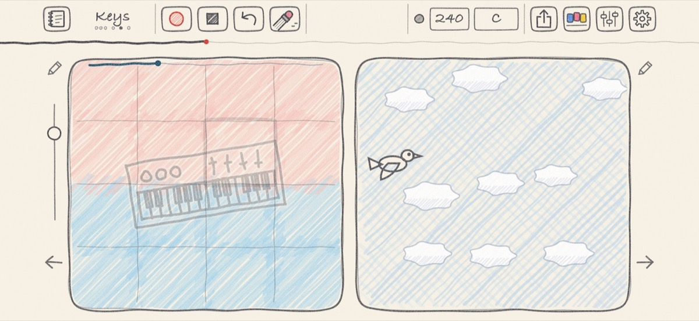
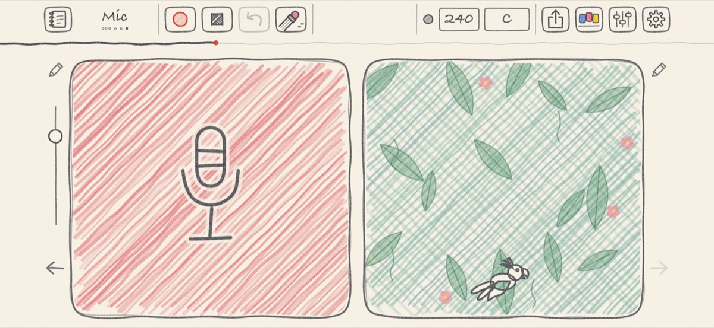
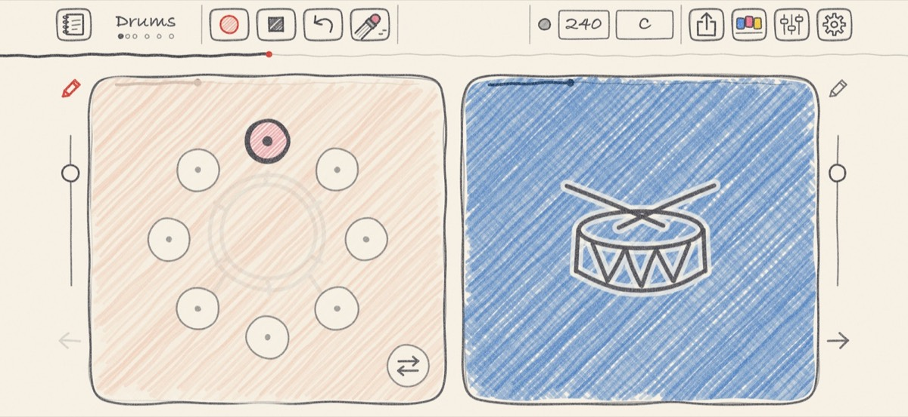

One by Two
A two-pad music app for sketching songs. Here's how to get going in five minutes.
1Get the app
- Install Apple's free TestFlight app from the App Store. It's how apps are tested before they go in the store.
- Open the invite link you were sent, on your iPhone.
- Tap Accept, then Install. One by Two appears on your home screen like any other app.
The first time you use the microphone, it asks for permission. That's only for recording your voice, and nothing leaves your phone.
2Tap the pads
There are two big pads. Each one plays a sound, and how hard you tap sets how loud it is. Gentle taps are quiet, firm taps are loud.

Hold the phone sideways or upright, whichever you like. Upright, the pads sit one above the other.
3Make a loop
- Tap the red record button at the top.
- Play a little beat on the drums.
- Tap record again at the end. Your beat now loops round and round.
Next to it: the square stops and starts everything, and the curly arrow undoes the last thing you recorded.
To add more on top, go to another instrument and tap record again. It counts you in, 1 2 3 4, and everything starts again from the top with you.
4Change instrument
Swipe sideways on the strip beside the pads, or tap the arrows at the bottom corners. There are drums, bass, keys, guitar, a wind instrument and a microphone.

5Keys, guitar and the animals
On the keys and guitar, the left pad plays chords: the bottom half picks which chord, the top half changes what kind (tap one, then play a chord). The chords all come from the same key, so they sound good together.
The right pad has an animal on it. Touch it, drag it around, or flick it and watch what happens to the sound. No instructions: find out by ear!

6Sing into it
On the microphone, tap the microphone pad to start recording your voice, and tap it again to stop. It loops along with everything else.
Then try moving the parrot up its pad: it sings along with you in harmony.

Headphones help, so the speaker doesn't get recorded too.
7Choose a different sound
Tap the pencil beside a pad. Its choices appear on the pad: tap the circles to hear each sound. Tap the pencil again when you're done.

The two-arrows button in the corner swaps the pads left and right.
8Tell me what you think
Anything at all helps: what was fun, what was confusing, what sounded wrong. Just text me, or take a screenshot while you're in the app and tap Share Beta Feedback to send a note.
Stuck? I'm happy to FaceTime and walk you through it.
New versions appear in TestFlight as updates. The app collects nothing about you: privacy policy.